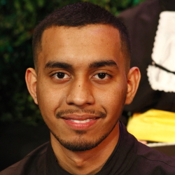

- Home
- >
- Currículo
Currículo
Dados Pessoais

Nome:
Uesley Souza Silva
Data de Nascimento:
25/03/1997
Residência:
Florianópolis, Brasil
Idiomas:
Português (Nativo)
Inglês (Técnico)
Sobre Mim
Tenho 4 anos de experiência na área de tecnologia. Trabalhei em áreas administrativas, suporte ao usuário de ERP, análise de sistemas e desenvolvimento web.
Em 2015 inicei o curso de Tecnologia em Sistemas para Internet, que encerrei em 2018 e obtive a menção honrosa como aluno com melhor desempenho da turma. No primeiro ano de faculdade eu comecei a trabalhar na área de tecnologia. Hoje eu ocupo o cargo de desenvolvedor web Full Stack, utilizando tecnologias como HTML/CSS, JavaScript e PHP.
Tenho experiência na criação de aplicações para a Web e aplicativos Móveis. Por 3 anos tenho participado no desenvolvimento de aplicações de diferentes níveis de complexidade. Sou apaixonado pelo código bem escrito e por metodologias de desenvolvimento ágil. Sou um trabalhador que entra em projetos não apenas para somar habilidades técnicas, mas também para pensar em conjunto sobre os objetivos do projeto.
Educação
2015-2018
Tecnologia em Sistemas para Internet/Graduação/UTFPR
Habilidades
Desenvolvimento de Software
HTML / CSS / PHP / JAVA / C# / Ruby
Frameworks
Rails / React / Angular 2+ / Ionic 3+ / Laravel / CakePHP
Análise de sistemas
Arquitetura de Software / Modelos de Desenvolvimento Ágil
Data Science
Datawarehousing / Analytcs
Experiência de Trabalho
2019-atualmente
Desenvolvedor Full Stack - DOT Digital Group - Florianópolis
2015-2019
Analista de Sistemas - Inside Sistemas - Toledo
2013-2015
Auxiliar Administrativo - Prati Donaduzzi - Toledo
Contato
uesleysilva@alunos.utfpr.edu.br
(45) 99815-8232
↩Voltar ao início